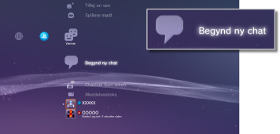
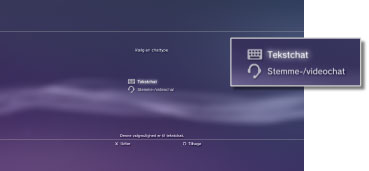
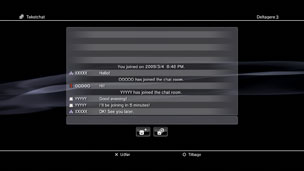

Start eller afslutning af tekstchat
Brug af denne funktion kræver muligvis en opdatering af din systemsoftware.
Du kan tekstchatte med personer på din Venneliste.
Start af tekstchat
1. |
Vælg |
|---|---|
|
 |
|
2. |
Vælg |
|
 |
|
3. |
Navngiv tekstchatrummet, og vælg derefter [OK]. |
4. |
Vælg de venner, der skal inviteres til chat, og vælg derefter [OK]. |
|
 |
 (Begynd ny chat).
(Begynd ny chat). (Tekstchat).
(Tekstchat).Tips
- Du skal logge på PSNSM for at kunne tekstchatte.
- En besked med chatinvitation sendes ikke til tekstchat.
- Der kan være op til 16 deltagere i et tekstchatrum.
- Tekstchatfunktionen kan ikke bruges, hvis der er angivet brugsbegrænsninger. Yderligere oplysninger om forældrekontrolindstillinger findes under [Om menuen XMB™] > [Brug af indstillinger for forældrekontrol] i denne vejledning.
Valg af et tekstchatrum
Hvis du er inviteret til en tekstchat, vises en besked i øverste højre hjørne af skærmen. Vælg  (Chatrum (kun tekst)) under
(Chatrum (kun tekst)) under  (Venner), og vælg derefter det chatrum, som du vil logge på.
(Venner), og vælg derefter det chatrum, som du vil logge på.
Tips
- Hvis der er valgt [Vis ikke] i [Beskeder] under
 (Indstillinger) >
(Indstillinger) >  (Systemindstillinger), vises der ingen beskeder.
(Systemindstillinger), vises der ingen beskeder. - For de fleste spiltitler gælder, at du kan deltage i tekstchat under spillet. Tryk på PS-tasten på den trådløse controller, at vælg derefter det chatrum, som du vil logge på, under (Venner) > (Chatrum (kun tekst)). Tryk på PS-tasten for at skifte til spilskærmen.
- Du kan deltage i op til tre chatrum ad gangen. Hvis du logger på et fjerde chatrum, logges du automatisk af det chatrum, som du først loggede på.
- Der kan vises op til 20 chatrum i (Chatrum (kun tekst)). Når der er mere end 20 chatrum, slettes det ældste chatrum automatisk, når der åbnes et nyt chatrum.
Sådan forlades et chatrum
Tryk på  -tasten for at lukke skærmen med tekstchat. Vælg det chatrum, som du vil forlade, tryk på
-tasten for at lukke skærmen med tekstchat. Vælg det chatrum, som du vil forlade, tryk på  -tasten, og vælg derefter [Forlad] i indstillingsmenuen.
-tasten, og vælg derefter [Forlad] i indstillingsmenuen.
Tip
Hvis du slukker PS3™-systemet eller logger af PSNSM, forlader du automatisk chatrummet. Hvis du logger på et chatrum, efter at du har forladt det, kan du ikke få vist de chatindlæg, der blev registreret, mens du var væk.
Sletning af et chatrum
Vælg det chatrum, som du vil slette, tryk på -tasten, og vælg derefter [Slet] i indstillingsmenuen.
Brug af kontrolpanelet
Følgende handlinger kan udføres via kontrolpanelet på skærmen med tekstchat.
 |
Inviter en ven | Inviter en ven til at deltage i et tekstchatrum. |
|---|---|---|
 |
Deltagerliste | Viser en liste over de personer, der er logget på chatrummet. |